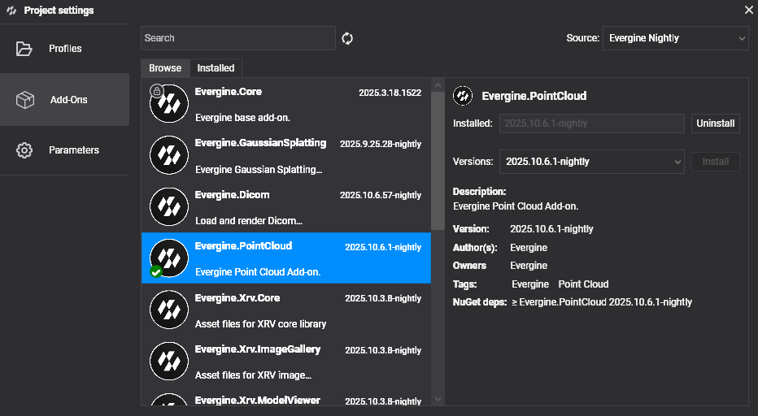

Getting Started
Follow these steps to begin working with Evergine.Cesium in your project.
Project Setup
1. Create a New Project
Use Evergine Launcher to start a new project. Select Windows or another supported desktop/mobile platform.
Note
Evergine.Cesium does not support Web platforms (WebGL / WebGPU). Please choose a different platform profile.
2. Add the Evergine.Cesium Add-on
Open Evergine Studio and add the Evergine.Cesium add-on to your project. Refer to this guide for instructions on adding add-ons.

Note
Evergine.Cesium is distributed as a NuGet package. For nightly builds, add the Evergine nightly feed to your nuget.config:
<?xml version="1.0" encoding="utf-8"?>
<configuration>
<packageSources>
<add key="nuget.org" value="https://api.nuget.org/v3/index.json" />
<add key="Evergine Nightly" value="https://pkgs.dev.azure.com/plainconcepts/Evergine.Nightly/_packaging/Evergine.NightlyBuilds/nuget/v3/index.json" />
</packageSources>
</configuration>
3. Set Up the CesiumCoordinator
CesiumCoordinator is the central scene manager that drives terrain streaming, camera navigation, and optional geocoding. Register it inside your scene's RegisterManagers() override:
using Evergine.Cesium;
using Evergine.Framework;
public class MyScene : Scene
{
public override void RegisterManagers()
{
base.RegisterManagers();
var cesium = new CesiumCoordinator
{
AccessToken = "<CESIUM_ION_TOKEN>",
AzureMapsKey = "<OPTIONAL_AZURE_MAPS_KEY>", // leave null if not needed
EntityManager = this.Managers.EntityManager,
OverlayProvider = TerrainOverlayProvider.BingAerial,
};
this.Managers.AddManager(cesium);
// Optional: fly to a starting location on scene load
// cesium.FlyTo(40.4168, -3.7038, 3.0);
}
}
Core Runtime API
Once registered, you can access CesiumCoordinator from anywhere in your scene via this.Managers.FindManager<CesiumCoordinator>().
Initialization & Status
| Member | Type | Description |
|---|---|---|
IsInitialized |
bool |
true once the coordinator has successfully connected to Cesium ion. |
CurrentStatus |
CesiumStatus |
Detailed loader state including connectivity and authentication results. |
Camera & Navigation
| Member | Description |
|---|---|
FlyTo(latitude, longitude, seconds) |
Smoothly animates the camera to the given geodetic position over the specified duration. |
WorldCamera |
Returns the current geospatial camera state (latitude, longitude, altitude, heading, pitch). |
Terrain
| Member | Description |
|---|---|
QueryTerrainMinHeight(latitude, longitude, callback) |
Asynchronously samples terrain height at the given coordinates and invokes the callback with the result. |
Geocoding (requires Azure Maps key)
| Member | Description |
|---|---|
GeocodeAsync(query) |
Searches for a place by address or name and returns matching results. |
ReverseGeocodeAsync(latitude, longitude) |
Returns the address for the given coordinates. |
AutocompleteAsync(query, maxResults) |
Returns autocomplete suggestions for a partial address or place name. |
Diagnostics
| Member | Description |
|---|---|
Diagnostics |
Exposes tile queue and streaming counters (tiles loaded, pending, cancelled…). |
UnmanagedDiagnostics |
Exposes native memory allocation and free counters for low-level profiling. |
Placing Entities on Earth
Attach a CesiumPlacerComponent to any entity to position it using geodetic coordinates. The component automatically converts coordinates to world space each frame and aligns the entity's orientation to the local up vector.
| Property | Type | Description |
|---|---|---|
Latitude |
double |
Latitude in decimal degrees (−90 to 90). |
Longitude |
double |
Longitude in decimal degrees (−180 to 180). |
Height |
double |
Height in metres. |
HeightIsRelativeToTerrain |
bool |
When true, Height is measured above the terrain surface. When false, it is measured above the WGS84 ellipsoid. |
Rotation |
Vector3 |
Local orientation offset applied after aligning to the Earth's surface. |
// Example: place a marker at the Eiffel Tower, 10 m above ground
var marker = new Entity("EiffelTower")
.AddComponent(new Transform3D())
.AddComponent(new CesiumPlacerComponent
{
Latitude = 48.8584,
Longitude = 2.2945,
Height = 10.0,
HeightIsRelativeToTerrain = true,
})
.AddComponent(new SphereMesh())
.AddComponent(new MeshRenderer());
this.Managers.EntityManager.Add(marker);
FAQ
Q: Can I change the imagery overlay at runtime?
Yes. Set CesiumCoordinator.OverlayProvider to any TerrainOverlayProvider value at any time. Terrain tiles are automatically reset and reloaded with the new imagery.
Q: Do I need to manage tile or texture memory manually?
No. The add-on handles all tile lifecycle management — loading, caching, and eviction — automatically.
Q: What happens if I don't provide an Azure Maps key?
Geocoding methods (GeocodeAsync, ReverseGeocodeAsync, AutocompleteAsync) will not work. All other features — terrain, buildings, imagery, camera navigation, and entity placement — remain fully functional.
Q: My scene loads but the terrain is blank. What should I check?
- Verify that your Cesium ion access token has the correct permissions for Cesium World Terrain and 3D Tiles.
- Check
CesiumCoordinator.CurrentStatusfor connectivity or authentication errors. - Ensure the scene has a MainCamera entity with a
Camera3Dcomponent.